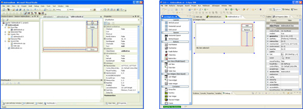

|
|
Building Qt applications is greatly simplified by the use of a build tool. Three options are open to us: We can use the qmake tool supplied with Qt, we can use a third-party build tool, or we can use an integrated development environment (IDE).
The qmake tool generates a platform-specific makefile from a platform-neutral .pro file. The tool has the necessary logic to invoke Qt's code-generating tools (moc, uic, and rcc) built-in. We have used qmake for all the examples in the book, in most cases using relatively simple .pro files. In fact, qmake provides a rich range of features including the ability to create makefiles that recursively invoke other makefiles and to switch certain features on or off depending on the target platform. In the first section of this appendix, we will review qmake and introduce some of its more advanced features.
In theory, any third-party build tool can be used for Qt development, but it is much easier to use one that is already Qt-aware. We will look at some of the Qt-aware build tools in the second section.
Some developers would rather use an IDE to build their applications. Trolltech provides software to integrate with Visual Studio and Eclipse (shown in Figure B.1), and the open source IDEs KDevelop and QDevelop—both written using Qt—provide excellent support for Qt development.

The qmake tool is supplied with Qt. It is used to build Qt itself as well as the tools and examples that accompany it. Throughout the book, we have used qmake project (.pro) files to build our example applications and plugins. In this section, we will study the .pro file syntax in a more systematic (although by no means comprehensive) way, and we will review a few fundamental qmake concepts. For complete coverage, see the qmake manual, available online at http://doc.trolltech.com/4.3/qmake-manual.html.
The purpose of a .pro file is to list the source files that are involved in a project. Since qmake is used for building Qt and its associated tools, it knows Qt very well and can generate rules for invoking moc, uic, and rcc. As a result, the syntax is very concise and easy to learn.
The three main types of project files are app (for stand-alone applications), lib (for static and shared libraries), and subdirs (for recursive subdirectory builds). This can be specified using the TEMPLATE variable, as follows:
TEMPLATE = lib
The subdirs template can be used for building targets in subdirectories. In that case, we need to specify only the SUBDIRS variable in addition to TEMPLATE = subdirs. In each subdirectory, qmake looks for a .pro file named after the directory and will build that project. The examples.pro file supplied with the examples provided for this book uses the subdirs template to run qmake on the individual examples.
If no TEMPLATE entry is present, the default is app. For app or lib projects, the most commonly used variables are the following:
HEADERS specifies the project's C++ header (.h) files.
SOURCES specifies the project's C++ implementation (.cpp) files.
FORMS specifies the Qt Designer .ui files to be processed by uic.
RESOURCES specifies the .qrc files to be processed by rcc.
DEFINES specifies the C++ preprocessor symbols that should be predefined.
INCLUDEPATH specifies the directories that should be searched by the C++ preprocessor for locating global header files.
LIBS specifies the libraries to link to the project. The libraries are specified either as absolute paths or using the Unix-inspired -L and -l flags (e.g., -L/usr/local/lib and -ldb_cxx).
CONFIG specifies various project configuration and compiler options.
QT specifies the Qt modules that are used by the project. (The default is core gui, corresponding to the QtCore and QtGui modules.)
VERSION specifies the version number of the target library.
TARGET specifies the base name of the target executable or library, excluding any extension, prefix, or version number. (The default is the name of the current directory.)
DESTDIR specifies the directory in which the target executable should be put. (The default is platform-dependent; for example, on Linux, it is the current directory, and on Windows, it is the debug or release subdirectory.)
DLLDESTDIR specifies the directory in which the target library file should be put. (It has the same default as DESTDIR.)
The CONFIG variable is used to control various aspects of the build process. The following options are supported:
debug means that an executable or library with debugging information should be built, and links against the debug versions of the Qt libraries.
release means that an executable or library without debugging information should be built, and links against the release versions of the Qt libraries. If both debug and release are specified, debug wins.
warn_off switches off as many warnings as possible. By default, builds are done with warnings switched on.
qt means that the application or library uses Qt. This option is included by default.
staticlib means that a static library should be built.
plugin means that a plugin should be built. Plugins are always shared libraries, so this option implies the dll option.
console means that the application needs to write to the console (using cout, cerr, qWarning(), etc.).
app_bundle applies only to Mac OS X builds, and means that the executable should be put in a bundle, which is the default on Mac OS X.
lib_bundle applies only to Mac OS X builds, and means that the library should be put in a framework.
To generate a makefile for a project file called hello.pro, we type
qmake hello.pro
After that, we can invoke make or nmake to build the project. We can also use qmake to generate a Microsoft Visual Studio project (.dsp or .vproj) file by typing
qmake -tp vc hello.pro
On Mac OS X, we can generate an Xcode project file using
qmake -spec macx-xcode hello.pro
and makefiles using
qmake -spec macx-g++ hello.pro
The -spec command-line option lets us specify a platform/compiler combination. Normally, qmake detects the correct platform, but in some cases it may be necessary to specify it explicitly. For example, to generate a makefile that invokes the Intel C++ Compiler (ICC) for Linux in 64-bit mode, we would type
qmake -spec linux-icc-64 hello.pro
The possible specifications are located in Qt's mkspecs directory.
Although qmake's primary purpose is to generate makefiles from .pro files, we can also use qmake to generate a .pro file for the current directory, using the -project option. For example:
qmake -project
In this mode, qmake will search the current directory for files with known extensions (.h, .cpp, .ui, etc.) and produce a .pro file that lists these files.
In the rest of this section, we will look in more detail at the .pro file syntax. A .pro file entry normally has the syntax
variable = values
where values is a list of string values. Comments start with the pound sign (#) and terminate at the end of the line. For example, the line
CONFIG = qt release warn_off # I know what I'm doing
assigns the list ["qt", "release", "warn_off"] to the CONFIG variable, overwriting any previous values. Additional operators are provided to supplement the = operator. The += operator lets us append values to a variable. Thus, the lines
CONFIG = qt CONFIG += release CONFIG += warn_off
effectively assign the list ["qt", "release", "warn_off"] to CONFIG, just as the previous example did. The -= operator removes all occurrences of the specified values from the variable's current value. Thus,
CONFIG = qt release warn_off CONFIG -= qt
leaves CONFIG with the list ["release", "warn_off"]. The *= operator adds a value to a variable, but only if the value is not already in the variable's list; otherwise, it does nothing. For example, the line
SOURCES *= main.cpp
will add the implementation file main.cpp to the project only if it isn't specified already. Finally, the ~= operator can be used to replace any values that match a regular expression with the specified replacement text, using a syntax inspired by sed (the Unix stream editor). For example,
SOURCES ~= s/\.cpp\b/.cxx/
replaces all .cpp file extensions with .cxx in the SOURCES variable.
Inside the list of values, qmake provides ways to access the values of other qmake variables, of environment variables, and of Qt configuration options. The syntaxes are listed in Figure B.2.
In the examples so far, we always used standard variables, such as SOURCES and CONFIG, but it is possible to set the value of any variable and to refer to it later using the $$varName or $${varName} syntax. For example:
MY_VERSION = 1.2
SOURCES_BASIC = alphadialog.cpp \
main.cpp \
windowpanel.cpp
SOURCES_EXTRA = bezierextension.cpp \
xplot.cpp
SOURCES = $$SOURCES_BASIC \
$$SOURCES_EXTRA
TARGET = imgpro_$${MY_VERSION}
The next example combines several of the syntaxes shown earlier and uses the built-in function $$lower() to convert strings to lowercase:
# List of classes in the project
MY_CLASSES = Annotation \
CityBlock \
CityScape \
CityView
# Append .cpp extension to lowercased class names, and add main.cpp
SOURCES = $$lower($$MY_CLASSES)
SOURCES ~= s/([a-z0-9_]+)/\1.cpp/
SOURCES += main.cpp
# Append .h extension to lowercased class names
HEADERS = $$lower($$MY_CLASSES)
HEADERS ~= s/([a-z0-9_]+)/\1.h/
Sometimes we may need to specify file names that include spaces in a .pro file. In that case, we can simply put quotes around the file name.
When compiling a project on different platforms, it might be necessary to specify different files or different options based on the platform. The general syntax for conditionals in qmake is
condition { then-case } else { else-case }
The condition part can be a platform name (e.g., win32, unix, or macx) or a more complex predicate. The then-case and else-case parts specify the values of variables using the standard syntax. For example:
win32 {
SOURCES += serial_win.cpp
} else {
SOURCES += serial_unix.cpp
}
The else branch is optional. For convenience, qmake also supports a one-line syntax when the then-case part consists of only one variable assignment and there is no else-case:
condition:then-case
For example:
macx:SOURCES += serial_mac.cpp
If we have several project files that need to share some of the same entries, we can factor out the common entries in a separate file and include it in the individual .pro files that need it using the include() directive:
include(../common.pri)
HEADERS += window.h
SOURCES += main.cpp \
window.cpp
Conventionally, project files that are meant to be included by other project files are given a .pri (project include) extension.
In a previous example, we saw the $$lower() built-in function, which returns a lowercase version of its argument. Another useful function is $$system(): It allows us to generate strings from external applications. For example, if we need to determine which version of Unix is being used, we can write
OS_VERSION = $$system(uname -r).
We can then use the resulting variable in a condition, together with contains():
contains(OS_VERSION, SunOS):SOURCES += mythread_sun.c
In this section, we have barely skimmed the surface. The qmake tool provides many more options and features than we presented here, including support for precompiled headers, for Mac OS X universal binaries, and for user-defined compilers or tools. Refer to the online qmake manual for full details.
|
|
| Converted from CHM to HTML with chm2web Pro 2.85 (unicode) |